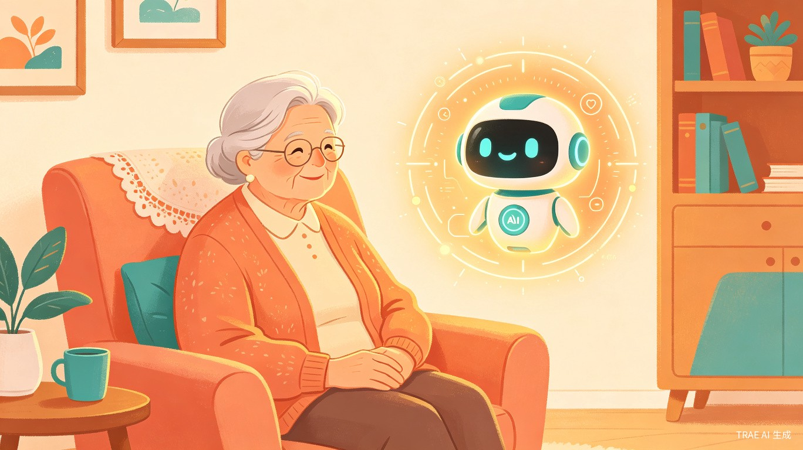
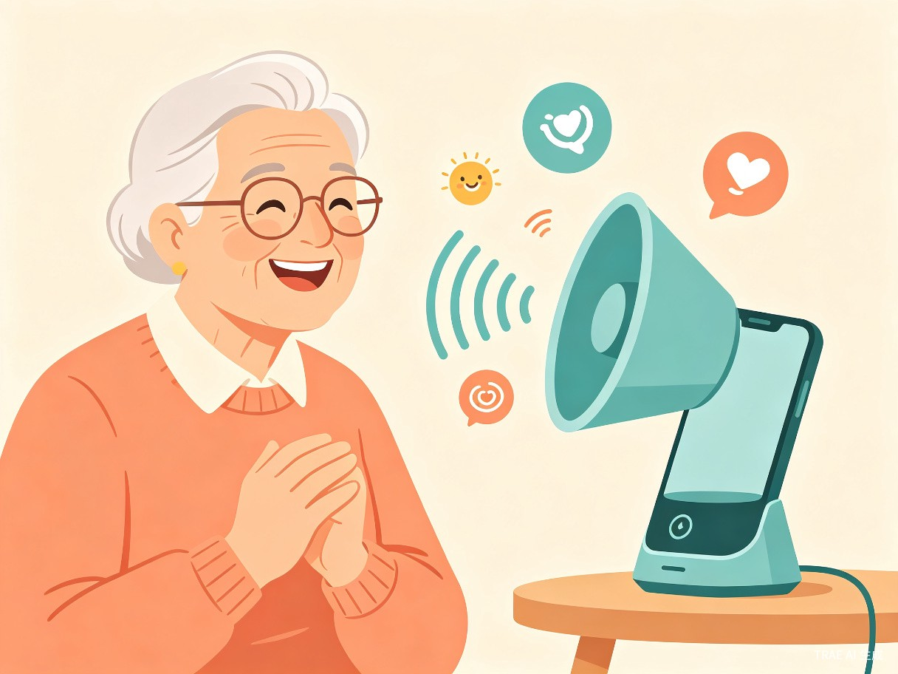
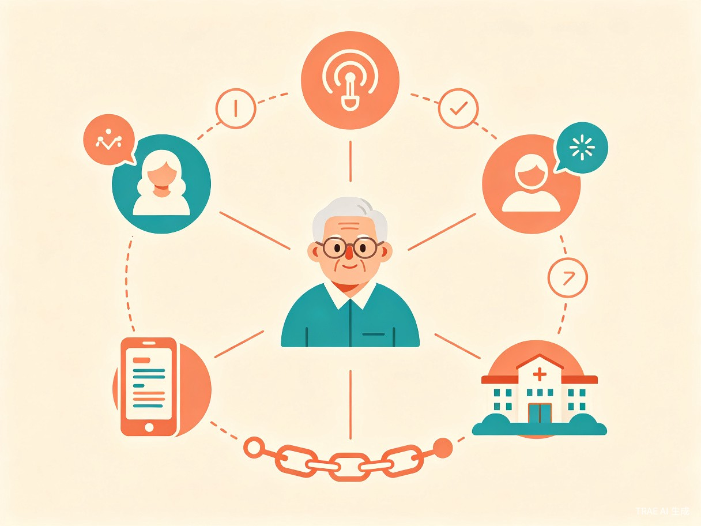

1创意介绍
想解决什么问题
中国超过 1.3 亿 空巢老人面临三重困境：情感孤独（子女不在身边，长期缺乏交流）、诈骗高发（保健品推销、电话诈骗、情感拉拢诈骗层出不穷）、突发风险（独居突发疾病或意外无人知晓）。现有产品要么只做陪伴（智能音箱），要么只做监测（跌倒报警器），没有一个产品同时解决"陪伴 + 反诈 + 安全守护"三重需求。
为什么会想到做这个
2024 年北京一起健康养生馆诈骗案中，400 多名老人被骗走超 3000 万元，平均每位老人损失 7.5 万元[2]。骗子正是利用老人"缺乏陪伴 + 健康焦虑 + 信息劣势"的弱点，以嘘寒问暖拉近距离，再实施诈骗。许多老人被骗后因羞愧选择隐瞒，导致案件难以被发现。
这让我深刻意识到：老人缺的不是一个能放音乐的智能音箱，而是一个能陪他们说话、帮他们辨别骗局、在危急时刻联系家人的"数字家人"。
大概是什么产品
暖伴 是一款以语音交互为核心的 AI 银发守护助手，产品形态为微信小程序 + 手机端语音助手（MVP 阶段），后续可扩展至智能音箱、陪伴机器人等硬件形态。产品包含老人端和子女端双端联动，构建"老人 — AI — 子女"三角守护网络。
2目标用户及痛点
面向哪些用户
独居 / 空巢老人（60-85 岁）
子女不在身边，日常缺乏交流陪伴。对智能手机操作不熟练，但能进行基本语音通话。健康意识强但信息辨别能力弱。
老人的子女（30-50 岁）
在外地工作，无法日常陪伴父母。担心父母安全，但电话沟通频率有限，难以实时了解父母状态。愿意为父母安全付费。
在什么场景下使用
| 场景 | 当前痛点 | 暖伴的解决方案 |
|---|---|---|
| 日常陪伴 全天候 |
子女不在身边，老人一天说不上几句话，长期孤独导致抑郁倾向 | AI 主动发起语音聊天，聊家常、讲新闻、播放戏曲；记住老人喜好，主动关怀 |
| 接到可疑电话 实时 |
老人无法辨别诈骗话术，被"免费体验""包治百病"等话术诱导，损失积蓄 | 通话实时监听，AI 识别诈骗关键词和话术模式，立即语音提醒老人并推送预警给子女 |
| 收到可疑信息 日常 |
微信群里转发的养生谣言、理财推销链接，老人难以分辨真假 | 老人转发可疑信息给暖伴，AI 分析内容并给出真伪判断和风险提示 |
| 突发意外 紧急 |
独居老人摔倒、突发疾病，无人发现，错过最佳救助时间 | 检测异常沉默（长时间无响应）、语音异常（痛苦声、呼救），自动联系子女和社区 |
| 子女远程关心 随时 |
子女打电话问"最近怎么样"，老人总说"没事没事"，真实状态难以了解 | 子女端 APP 查看老人状态摘要（情绪、活动、异常事件），主动知情而非被动询问 |
3核心功能

AI 日常陪伴
语音聊天，支持方言识别；主动关怀提醒（用药、天气、活动建议）；兴趣内容推送（戏曲、新闻、养生知识）；记住老人喜好和习惯，提供个性化陪伴体验。
诈骗甄别与拦截
通话实时监听，识别保健品推销、电信诈骗、情感诈骗等话术模式；可疑信息（短信、微信）AI 分析并预警；一键向子女举报；诈骗话术库持续更新。

安全状态监测
异常沉默检测（长时间无响应自动提醒）；语音异常识别（痛苦声、呼救声）；紧急情况下自动联系子女 + 社区医院；日常活动规律分析，偏离规律时预警。
子女远程联动
子女端 APP 查看老人状态摘要（情绪趋势、活动规律、异常事件）；异常事件实时推送；视频通话、远程语音留言；设置关注事项（如用药提醒确认）。
产品架构
老人端
语音交互
大字大按钮
极简操作
暖伴 AI 核心
大模型对话
诈骗识别引擎
状态监测引擎
子女端
状态查看
异常预警
远程关怀
4价值与意义
社会价值
直接回应 1.3 亿空巢老人的情感与安全需求，填补养老护理员 550 万缺口中的陪伴与监测空白。通过 AI 反诈功能，保护老年人养老钱袋，减少诈骗案件发生。让科技真正服务于最需要关怀的群体，体现"科技向善"。
商业价值
中国养老服务机器人市场规模预计 2026 年突破百亿元[1]。暖伴以软件先行（小程序 MVP），降低用户尝试门槛；后续可通过硬件（智能音箱/陪伴机器人）+ 订阅服务（高级反诈库、健康监测）实现商业化。子女为父母付费的"孝心经济"模式已被市场验证。
5差异化亮点
为什么是暖伴，而不是智能音箱？
市面上的养老陪伴产品（小度、天猫精灵）只做被动响应的娱乐功能，没有产品专门聚焦"反诈骗"。暖伴将诈骗甄别作为核心能力，直击老年人最大痛点。
不是单向陪伴，而是构建"老人 — AI — 子女"三角守护网络。子女从"被动询问"变为"主动知情"，老人从"独自面对"变为"有人守护"。
传统智能音箱等用户发指令才响应。暖伴基于大模型能力，主动发起关怀：记住老人喜好定时推送内容、检测情绪低落主动聊天、发现异常自动报警。
MVP 阶段以微信小程序为载体，无需购买硬件，老人用现有手机即可使用，大幅降低推广门槛和用户尝试成本。
6开发计划
| 阶段 | 时间 | 交付内容 |
|---|---|---|
| 初赛 Demo | 7 月 15 日前 | 核心场景：老人接到可疑电话 → AI 实时识别诈骗话术 → 语音提醒老人 + 推送预警给子女。用 TRAE IDE 搭建语音交互 Demo，TRAE Work 生成产品文档。 |
| 复赛产品 | 8 月 9 日前 | 完整功能：日常陪伴 + 诈骗甄别库 + 安全监测 + 子女端小程序。完整用户路径，核心能力闭环，视觉设计统一。 |
| 决赛路演 | 8 月 22 日 | 现场演示完整产品 + 真实用户测试数据 + 产品故事叙事。 |